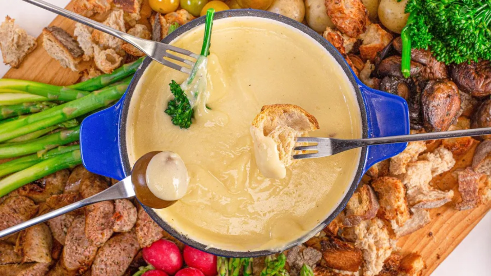
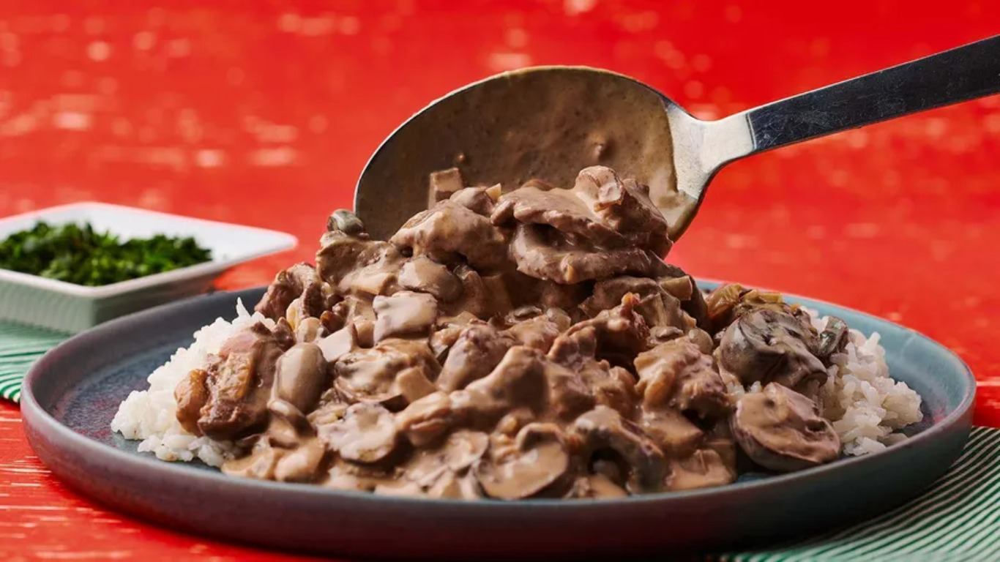

Galeria



Experiência gastronômica única com os melhores ingredientes.
Veja nosso cardápioNo Restaurante José, oferecemos uma experiência culinária que combina tradição com inovação. Nossos chefs são apaixonados por criar pratos que celebram os sabores locais e internacionais. Com ingredientes frescos e cuidadosamente selecionados, cada refeição é uma verdadeira obra-prima.
Desde 2000, estamos comprometidos em oferecer um atendimento de excelência, em um ambiente aconchegante e elegante. Seja para um jantar romântico, um encontro entre amigos ou uma celebração especial, você sempre encontrará algo especial em nosso cardápio.